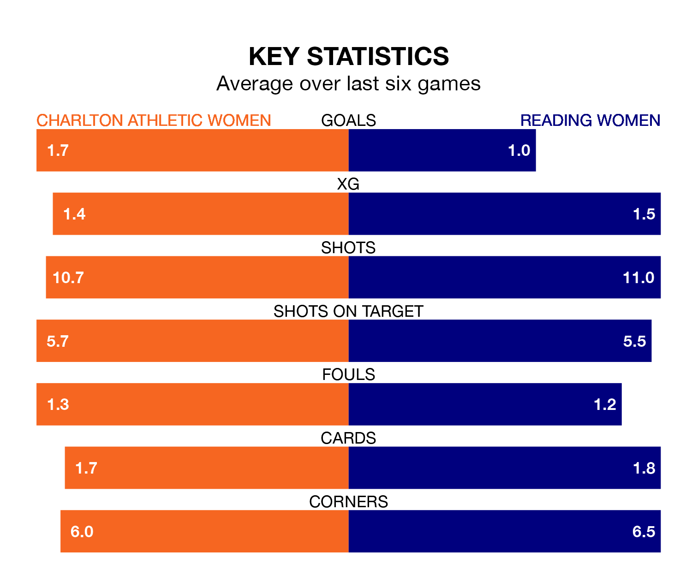

Charlton Athletic Women host Reading Women in Sunday's early match at the Oakwood looking to bounce back from defeat last time out in the FA Women's Championship.
Charlton Athletic, who sit top of the league after 15 games, fell to a 1-1 home defeat to Lewes Women on February 4.
They face a Reading side who picked up a win in their last match, a 1-0 victory against Sunderland Women, and who sit ninth in the table.
With 13 goals in 13 games so far this season, Reading are the league's third-lowest scorers with 1.0 goals per game. And they are conceding at an average rate, letting in 17 goals at a rate of 1.3 per game.
Charlton Athletic, meanwhile, are above average scorers, with 1.5 goals per game, compared to a league average of 1.3. They have conceded 0.9 goals per game.
In Sian Rogers, the hosts can rely on one of the league's safest pair of hands. She has kept five clean sheets in her 12 appearances this season, and only one other 'keeper – Sunderland Women's Claudia Moan – has been able to prevent the opposition scoring on more occasions in the FA Women's Championship.
In the Royals's net, Emily Orman also has five clean sheets in 12 games. She has conceded a goal every 77 minutes, 90% more often than the 147 minutes between goals for Rogers.
Charlton Athletic are in reasonable form in the FA Women's Championship, with three wins and three draws from their last six games.
With a win and three draws over that period, the away side's form is much worse – they have taken six points from 18, compared to Charlton Athletic's 12.
Updated: 14:59 (UTC), 05/02/24